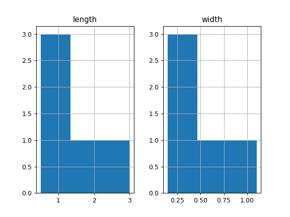

pandas.core.groupby.DataFrameGroupBy.hist#
- DataFrameGroupBy.hist(column=None, by=None, grid=True, xlabelsize=None, xrot=None, ylabelsize=None, yrot=None, ax=None, sharex=False, sharey=False, figsize=None, layout=None, bins=10, backend=None, legend=False, **kwargs)[source]#
Make a histogram of the DataFrame’s columns.
A histogram is a representation of the distribution of data. This function calls
matplotlib.pyplot.hist(), on each series in the DataFrame, resulting in one histogram per column.- Parameters:
- dataDataFrame
The pandas object holding the data.
- columnstr or sequence, optional
If passed, will be used to limit data to a subset of columns.
- byobject, optional
If passed, then used to form histograms for separate groups.
- gridbool, default True
Whether to show axis grid lines.
- xlabelsizeint, default None
If specified changes the x-axis label size.
- xrotfloat, default None
Rotation of x axis labels. For example, a value of 90 displays the x labels rotated 90 degrees clockwise.
- ylabelsizeint, default None
If specified changes the y-axis label size.
- yrotfloat, default None
Rotation of y axis labels. For example, a value of 90 displays the y labels rotated 90 degrees clockwise.
- axMatplotlib axes object, default None
The axes to plot the histogram on.
- sharexbool, default True if ax is None else False
In case subplots=True, share x axis and set some x axis labels to invisible; defaults to True if ax is None otherwise False if an ax is passed in. Note that passing in both an ax and sharex=True will alter all x axis labels for all subplots in a figure.
- shareybool, default False
In case subplots=True, share y axis and set some y axis labels to invisible.
- figsizetuple, optional
The size in inches of the figure to create. Uses the value in matplotlib.rcParams by default.
- layouttuple, optional
Tuple of (rows, columns) for the layout of the histograms.
- binsint or sequence, default 10
Number of histogram bins to be used. If an integer is given, bins + 1 bin edges are calculated and returned. If bins is a sequence, gives bin edges, including left edge of first bin and right edge of last bin. In this case, bins is returned unmodified.
- backendstr, default None
Backend to use instead of the backend specified in the option
plotting.backend. For instance, ‘matplotlib’. Alternatively, to specify theplotting.backendfor the whole session, setpd.options.plotting.backend.- legendbool, default False
Whether to show the legend.
- **kwargs
All other plotting keyword arguments to be passed to
matplotlib.pyplot.hist().
- Returns:
- matplotlib.AxesSubplot or numpy.ndarray of them
See also
matplotlib.pyplot.histPlot a histogram using matplotlib.
Examples
This example draws a histogram based on the length and width of some animals, displayed in three bins
>>> data = {'length': [1.5, 0.5, 1.2, 0.9, 3], ... 'width': [0.7, 0.2, 0.15, 0.2, 1.1]} >>> index = ['pig', 'rabbit', 'duck', 'chicken', 'horse'] >>> df = pd.DataFrame(data, index=index) >>> hist = df.hist(bins=3)
